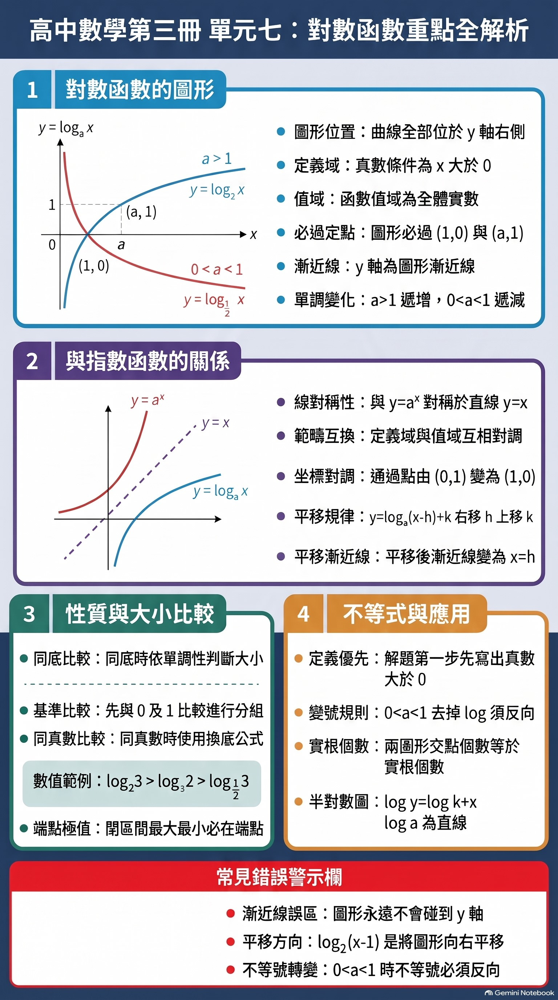

7-1
對數函數的定義與圖形
- y = logₐx（a > 0，a ≠ 1）：定義域 x > 0、值域全體實數；必過 (1, 0) 與 (a, 1)，y 軸是漸近線
- a > 1 遞增、0 < a < 1 遞減；越長越慢：x 變 2 倍，log₂x 才加 1
4資訊圖表重點
點一下放大全圖
2互動視覺化：底數決定圖形
拉底數滑桿：a 經過 1 時圖形「翻面」，但永遠通過 (1, 0)、不會碰到 y 軸。沿曲線拖曳白點，看 x 變 2 倍時 y 只增加固定的 logₐ2。
1NotebookLM 簡報
3隨堂評量
7-2
對數函數與指數函數的關係、圖形變換
- y = aˣ 與 y = logₐx 互為反函數，圖形對稱於直線 y = x：點 (p, q) ⇔ 點 (q, p)，定義域與值域互換
- y = logₐ(x − h) + k：右移 h、上移 k，漸近線變成 x = h、定義域 x > h
4資訊圖表重點
點一下放大全圖
2互動視覺化
沿橘色曲線 y = aˣ 拖曳白點 P，青色曲線 y = logₐx 上會出現坐標對調的點 Q：P、Q 對稱於直線 y = x。
1NotebookLM 簡報
3隨堂評量
7-3
對數函數的性質與大小比較
- 同底看單調性；先與 0、1 比較分成三群；同真數用換底；必要時找 3/2 之類的數夾在中間
- 單調函數在閉區間的最大值、最小值出現在端點；令 t = logₐx 時要換範圍
4資訊圖表重點
點一下放大全圖
2互動視覺化
先讓學生猜順序，再按揭曉
數線分成三區：紅色是負數、黃色是 0 到 1、綠色是大於 1。先判斷每個數在哪一區，同一區再細比。
1NotebookLM 簡報
3隨堂評量
7-4
對數不等式與圖形的應用
- 解對數不等式：先寫真數 > 0，化同底後用單調性去掉 log（底數 0 < a < 1 要變號），最後取交集
- 方程式的實根個數＝兩圖形的交點個數；半對數圖把指數成長 y = k·aˣ 畫成直線
4資訊圖表重點
點一下放大全圖
2互動視覺化
調整直線 y = mx + c，看它和對數曲線有幾個交點：交點的 x 坐標就是方程式的實根。一增一減最多一個交點；對數曲線彎彎的，和直線可能有 0、1 或 2 個交點。
1NotebookLM 簡報
3隨堂評量
🧠
單元心智圖
- NotebookLM 產生的概念架構（中文版）：點小標題可展開或收合
- 上課可先全部收合，請學生猜每個分支下面有什麼，再逐一打開
🃏
學習卡
- 點卡片（或按空白鍵）翻面看答案；← → 切換上一張、下一張
- 標記「我會了／再複習」，可以只練還不熟的卡片；標記只存在這台電腦的瀏覽器
★
總複習
- 封面、單元重點總整理、形成性評量 10 題（附答案）、NotebookLM 教學影片，以及完整資訊圖表（含常見錯誤）
1NotebookLM 簡報：重點總整理與形成性評量
▶NotebookLM 教學影片
4完整資訊圖表

點一下放大